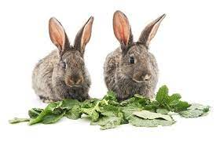

Essential Elements of Rabbit Nutrition
Hay
Hay should be the base of a rabbit's diet, providing essential fiber for digestion.
Pellets
Use high-quality pellets specific for rabbits, containing fiber, proteins, and vitamins.

Fresh Vegetables
Include a variety of fresh vegetables like carrots, spinach, romaine lettuce, broccoli, and celery.
Fruits
Offer fruits like apples, pears, and bananas in small quantities as treats.